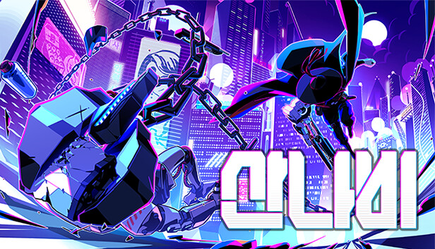
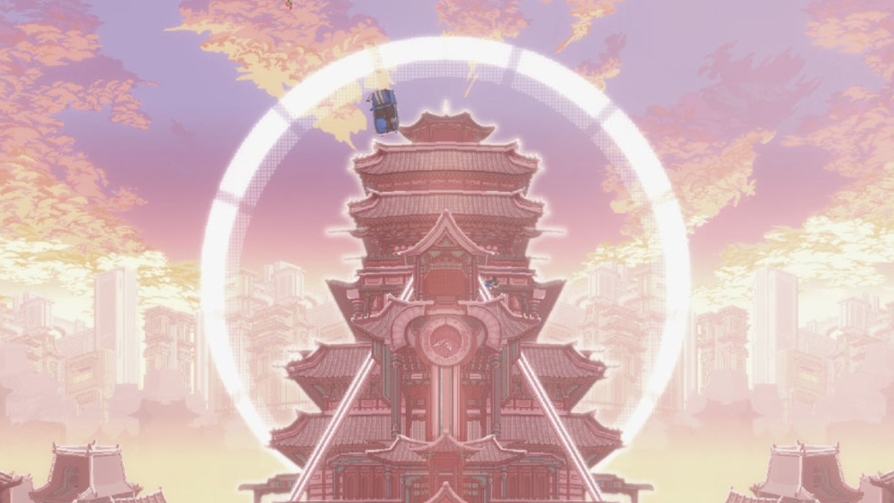
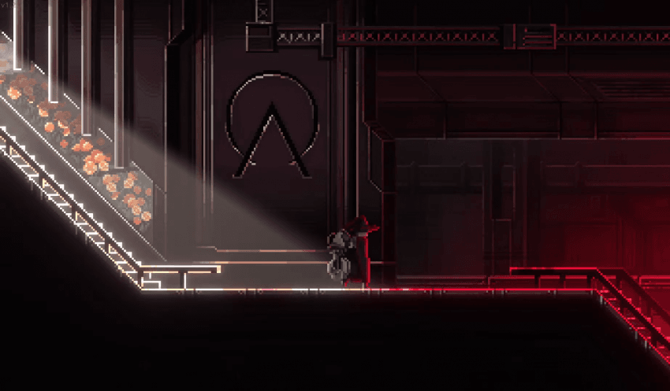
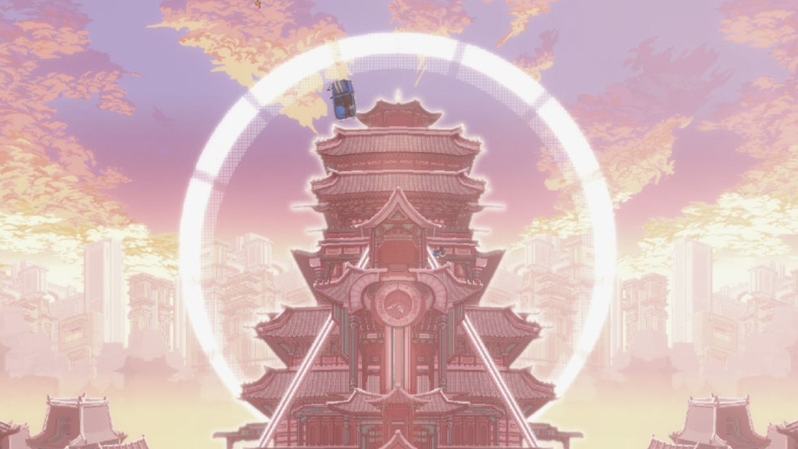
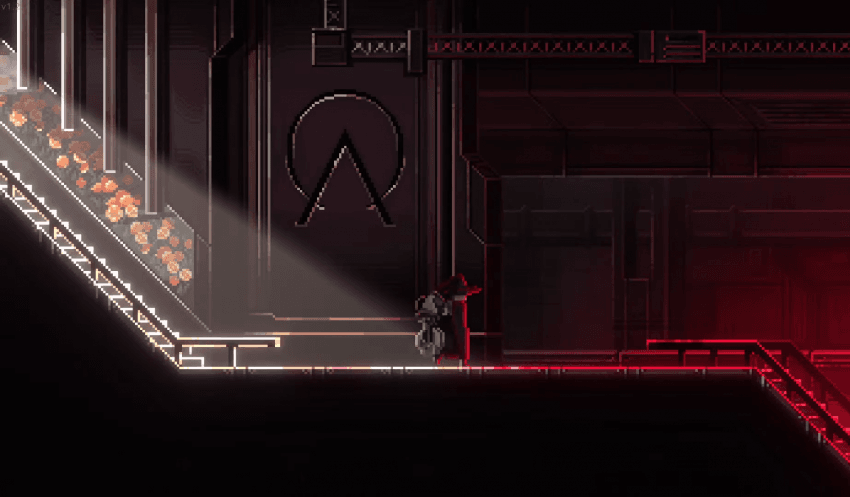

산나비

출시일 : 2023년 11월 9일
장르 : 사이버펑크, 액션 어드벤처, 플랫폼
가격 : 15,500원
기계팔로 무장한 퇴역 군인은 초거대 재벌의 부패한 사유 도시를 오릅니다. 도시에 숨겨진 비밀을 밝혀내기 위해, 그리고 '산나비'를 찾아내 복수하기 위해. 사이버펑크 디스토피아를 배경으로 펼쳐지는 역동적이고 스타일리쉬한 2D "사슬 액션" 어드벤처 플랫포머 게임, 산나비입니다.
|
기준일:
2024-12-21 |
|
|---|---|
| 메타스코어 83/100 | 유저 평점 8.3/10 |
|
기준일:
2024-12-21 |
|
|---|---|
| 종합 평가 | 최근 평가 |
| 압도적으로
긍정적(97%) (평가 29,893개) |
압도적으로
긍정적(96%) (평가 1,030개) |
1. 우수한 도트 퀄리티와 그래픽

‘조선 사이버펑크’라는 별명이 어울릴 정도로 사이버펑크한 디자인을 픽셀 그래픽으로 잘 표현했다. 각 챕터를 넘나들 때마다 조선과 사이버펑크, 한국적인 부분을 모두 담고 있어 스크린샷을 계속해서 누를 수밖에 없다.
2. 플랫포머의 재미

산나비의 ‘사슬 액션’은 와이어와 같은 것을 활용하여 진행하게 된다. 속도감이 빠르고 손맛도 있어 마치 스파이더맨이 된 것 같다.
3. 기승전결이 확실한 스토리
 뻔하지만 묵직하게 이끌어가는 이야기와 연출이 좋고 특히 떡밥을 회수하는 능력이 엄청나다. 지나오면서 별거 아니라고 생각했던 대사들이 다 하나하나 떡밥이다.

‘조선 사이버펑크’라는 별명이 어울릴 정도로 사이버펑크한 디자인을 픽셀 그래픽으로 잘 표현했다. 각 챕터를 넘나들 때마다 조선과 사이버펑크, 한국적인 부분을 모두 담고 있어 스크린샷을 계속해서 누를 수밖에 없다.
2. 플랫포머의 재미
산나비의 ‘사슬 액션’은 와이어와 같은 것을 활용하여 진행하게 된다. 속도감이 빠르고 손맛도 있어 마치 스파이더맨이 된 것 같다.
3. 기승전결이 확실한 스토리
 뻔하지만 묵직하게 이끌어가는 이야기와 연출이 좋고 특히 떡밥을 회수하는 능력이 엄청나다. 지나오면서 별거 아니라고 생각했던 대사들이 다 하나하나 떡밥이다.
"우린 울지 않는 부엉이요."
"발자국 없는 범이다."